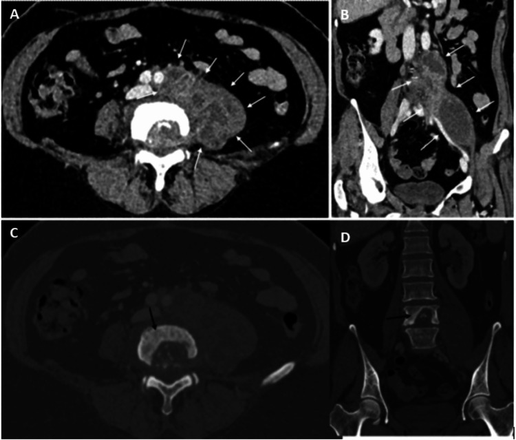
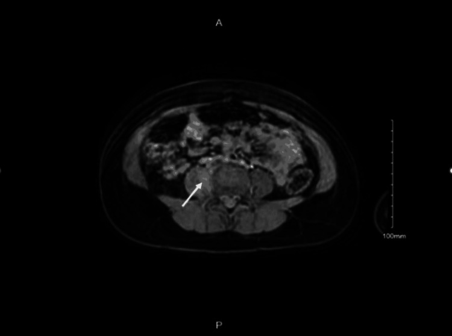
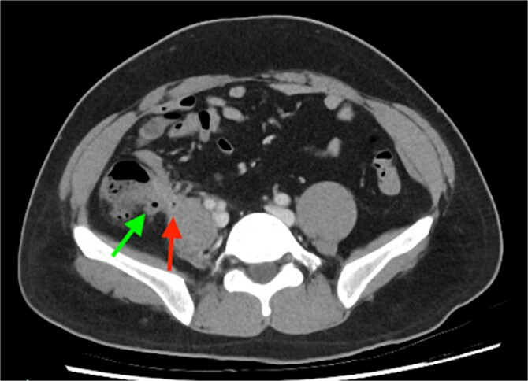

3081 — Áp-xe cơ chậu (psoas abscess) ở trẻ: đau háng – đi khập khiễng, X-quang háng bình thường vẫn không loại trừ
Tags: pattern:ap-xe pattern:o-dich pattern:mat-duong-vien-co-chau pattern:vien-ngam-thuoc vung:o-bung vung:sau-phuc-mac vung:co-chau anatomy:co-chau protocol:CT-bung-co-can-quang protocol:MRI-co-xuong
Mức chắc chắn (certainty): tổng hợp y văn (literature synthesis) — ghép loạt 28 trẻ áp-xe cơ chậu trong 20 năm (BMC Infect Dis 2026, PMC13621494; CC BY-NC-ND), ca trẻ 5 tuổi sốt – đau háng – từ chối tì chân, X-quang háng bình thường, chẩn đoán bằng MRI (Cureus 2022, PMC9217099; CC BY), ca áp-xe cơ chậu do lao cột sống bắt chước viêm ruột thừa (Cureus 2025, PMC12720216; CC BY) và ca viêm ruột thừa gây áp-xe cơ chậu (J Surg Case Rep 2026, PMC13147445; CC BY). Không có ca do nhóm tự chụp.
Câu hỏi thực hành: bé gái 5 tuổi, đau háng phải 3 ngày, không chịu đi, sốt 38,4°C, không chấn thương. X-quang háng bình thường; siêu âm khớp háng "không tràn dịch". CRP 96 mg/L, bạch cầu 16,8 G/L. Bác sĩ trực kết luận "viêm khớp háng thoáng qua" và cho về. Bài chốt ba quyết định: (1) đau háng + đi khập khiễng + sốt ở trẻ, X-quang bình thường KHÔNG loại trừ áp-xe cơ chậu — ổ mủ nằm sau phúc mạc, ngoài khớp háng; (2) dấu CT chốt là cơ chậu to, mất đường viền mỡ quanh cơ, ổ dịch 0–20 HU có viền ngấm thuốc, ± khí, ± phá hủy thân sống; (3) ổ ≥ 3 cm hoặc không đáp ứng kháng sinh 48–72 giờ phải dẫn lưu qua da, không chờ "khớp háng bình thường".
1. Tổng quan bệnh học – cơ chế hình ảnh: vì sao X-quang háng bình thường
- Giải phẫu quyết định hình ảnh: cơ chậu (psoas) đi từ T12–L5 dọc thân sống, chui dưới dây chằng bẹn cùng cơ chậu (iliacus) tạo khoang cơ chậu – chậu (iliopsoas compartment) nằm ngoài phúc mạc, trước khớp háng và cột sống thắt lưng. Vì vậy ổ mủ ở đây không làm thay đổi khớp háng trên X-quang và không gây tràn dịch khớp trên siêu âm — đúng cái bẫy của ca 5 tuổi (PMC9217099).
- Hai cơ chế bệnh sinh (phân loại kinh điển):
- Nguyên phát (primary): lây qua đường máu hoặc bạch huyết từ ổ xa, hay gặp ở trẻ em, thường một loại vi khuẩn, đứng đầu là Staphylococcus aureus (PMC9217099). Đây là thể hay gặp ở trẻ khỏe mạnh, không có ổ nhiễm kề bên.
- Thứ phát (secondary): lan trực tiếp từ cấu trúc kề bên — khớp háng, cột sống, đường tiêu hóa, động mạch chủ, đường niệu – sinh dục — hoặc sau chấn thương/thủ thuật vùng bẹn, cột sống thắt lưng, khớp háng; có thể một hoặc nhiều loại vi khuẩn, gồm vi khuẩn đường ruột và kỵ khí (PMC9217099).
- TẠI SAO dịch mủ có đậm độ thấp: mủ là dịch giàu protein, tế bào chết và nước, không phải mô đặc — trên CT điển hình 0–20 HU (gần nước), không ngấm thuốc bên trong, chỉ có viền ngấm thuốc do mô hạt viêm quanh ổ. Ngược lại, máu tụ cấp đặc hơn nhiều (50–70 HU) và không có viền viêm — đây là điểm phân biệt cốt lõi với máu tụ cơ chậu (thường gặp ở trẻ dùng kháng đông hoặc bệnh máu).
- TẠI SAO MRI nhạy hơn ở trẻ: ổ mủ tăng tín hiệu mạnh trên T2 fat-sat/STIR, hạn chế khuếch tán (sáng trên DWI, tối trên ADC) do độ nhớt và mật độ tế bào cao, và viền ngấm thuốc sau tiêm. MRI còn thấy phù tủy xương (thân sống, cánh chậu) và lan vào ống sống/ngoài màng cứng — những thứ CT bỏ sót và là lý do phải chụp MRI khi nghi lao hoặc có dấu thần kinh.
- TẠI SAO "mất đường viền mỡ cơ chậu" là dấu sớm: bình thường cơ chậu có lớp mỡ rõ ngăn cách với thận, thân sống và mạch chậu. Phù và dịch viêm thấm vào lớp mỡ này → trên CT mất dải mỡ mỏng đó trước khi có ổ dịch rõ; đây là dấu cần tìm khi ổ còn nhỏ.
- Con số vận hành ở trẻ (loạt 28 ca, 20 năm): nam:nữ 1:1; 32,1% dưới 5 tuổi; 64,3% có bệnh nền; đau háng có ở 100% ca nguyên phát; sốt gặp 54,5% ca thứ phát nhưng chỉ 16,7% ca nguyên phát; vi khuẩn hay gặp là Gram dương, đặc biệt Staphylococcus; nằm viện trung vị 38 ngày (21,0–57,5); 67,9% phải can thiệp ngoại khoa; không có ca tử vong (PMC13621494).
- Vì sao sốt thấp ở thể nguyên phát: ổ mủ khu trú, không có ổ nhiễm niêm mạc nên đáp ứng viêm toàn thân yếu hơn; trẻ chỉ đau và đi khập khiễng. Vì vậy không có sốt cao không loại trừ áp-xe cơ chậu.
2. Mẫu hình + chẩn đoán phân biệt theo vị trí (gamut)
- Theo vị trí ổ dịch:
- Trong cơ chậu (intra-psoas): thể nguyên phát; ổ đơn độc, thường một bên, sát thân sống.
- Cơ chậu – chậu (iliopsoas): lan xuống hố chậu, sát khớp háng; dễ nhầm viêm khớp háng.
- Cơ vuông thắt lưng (quadratus lumborum): sau thận, lan từ ổ thận; trên CT thấy ổ sau cơ chậu.
- Lan lên cột sống: phá hủy thân sống + ổ ngoài màng cứng (lao/Pott) — ca PMC12720216.
- Lan vào thận: rò cơ chậu – thận (đã gặp ở trẻ 2 tuổi với ổ nhiều vách lan vào thận, PMC12020822).
- Lan vào khớp háng: ổ dịch trong khớp + mất lớp mỡ quanh cổ xương đùi.
- Theo hình thái trên CT/MRI:
- Ổ dịch có viền (rim-enhancing collection) — điển hình.
- Cơ chậu to, phù, chưa hóa mủ (pyomyositis) — chưa có ổ dịch rõ, chỉ ngấm thuốc lan tỏa.
- Ổ dịch có khí — sau thủ thuật hoặc vi khuẩn sinh hơi; khí một mình không chứng minh áp-xe nếu mới can thiệp.
- Ổ nhiều vách (multiloculated) — khó dẫn lưu qua da, dễ tái phát.

Hình 1 — CT thì tĩnh mạch cửa: (A) axial và (B) coronal — ổ dịch lớn trong cơ chậu trái (mũi tên trắng), cơ chậu căng to, mất đường viền mỡ; (C–D) cửa sổ xương — phá hủy thân sống L4 (mũi tên đen). Đây là áp-xe lao (Pott) bắt chước viêm ruột thừa. Nguồn: Salih AF, Malik S., Cureus 2025 (PMC12720216), CC BY 4.0.3. Bảng so sánh phân biệt (ma trận đối chiếu)
| Thực thể | Hình ảnh điển hình | Chốt vào (rule-in) | Chốt loại (rule-out) | Gợi ý xác nhận |
|---|---|---|---|---|
| Áp-xe cơ chậu | Cơ chậu to; ổ dịch 0–20 HU, viền ngấm thuốc, mất đường viền mỡ; ± khí; ± phá hủy thân sống | Ổ dịch trong cơ chậu + viền ngấm thuốc + phù mô quanh; sốt/CRP cao | Cơ chậu đối xứng, không ổ dịch, mỡ quanh cơ còn rõ → loại | CT có cản quang hoặc MRI; chọc hút/dẫn lưu lấy mủ + cấy |
| Máu tụ cơ chậu | Khối 50–70 HU (cấp), không viền ngấm thuốc, không khí; bối cảnh chấn thương/kháng đông/bệnh máu | Đậm độ cao + không viền + tiền sử chấn thương/rối loạn đông | Đậm độ thấp, có viền, có phù lan tỏa → loại | Theo dõi CT; không chọc khi còn nghi máu tụ chưa ổn định |
| Viêm cơ chậu (pyomyositis) | Cơ to, ngấm thuốc lan tỏa, chưa có ổ dịch; T2/STIR sáng | Ngấm thuốc cơ lan tỏa, không ổ dịch | Có ổ dịch có viền → loại | MRI; kháng sinh theo kinh nghiệm |
| U cơ chậu (sarcoma/lymphoma/di căn) | Khối đặc, ngấm thuốc không đều, không viền mỏng; có thể xâm lấn xương | Thành phần đặc + ngấm thuốc trong khối + không sốt cấp | Ổ dịch thuần, viền mỏng đều → loại | MRI + sinh thiết; không dẫn lưu mù |
| Phình mạch nhiễm khuẩn (mycotic aneurysm) | Túi mạch ngấm thuốc thì động mạch, thông với động mạch chủ/chậu; ± khí quanh mạch | Ngấm thuốc đồng thì với động mạch + thông lòng mạch | Không ngấm thuốc thì động mạch → loại | CTA; chống chỉ định chọc |
| Viêm ruột thừa sau manh tràng + áp-xe | Ruột thừa to, thâm nhiễm, ổ dịch sát cơ chậu phải, ± sỏi phân | Ruột thừa bất thường + ổ dịch kề cơ chậu phải | Ruột thừa bình thường, ổ dịch trung tâm cơ → loại | CT; mổ nội soi |
| Viêm khớp háng nhiễm khuẩn | Tràn dịch khớp, dày bao khớp, tiêu đầu xương; cơ chậu bình thường | Tràn dịch khớp + hạn chế vận động + cơ chậu bình thường | Có ổ dịch trong cơ chậu → loại | Siêu âm khớp + chọc khớp; không bỏ sót ổ cơ chậu kèm |
| Viêm đĩa đệm – thân sống | Phù tủy xương 2 thân sống kề đĩa, hẹp đĩa, ± ổ ngoài màng cứng | Phù tủy 2 thân sống + hẹp đĩa + ngấm thuốc đĩa | Tủy xương bình thường → loại | MRI có gadolinium; cấy máu/sinh thiết |
4. Protocol chụp – ngưỡng dẫn lưu – theo dõi
4.1 Trình tự chẩn đoán ở trẻ
- Siêu âm là bước đầu (không bức xạ): tìm ổ dịch trong cơ chậu, tràn dịch khớp háng, ứ nước thận. Hạn chế: hơi ruột che, ổ sâu sau phúc mạc — siêu âm âm tính không loại trừ.
- MRI là lựa chọn ưu tiên khi trẻ hợp tác hoặc có thể an thần: không bức xạ, thấy phù tủy xương, lan ống sống, viêm đĩa đệm, phân biệt ổ dịch – u – máu tụ tốt hơn. Dùng T2 fat-sat/STIR + DWI + T1 sau tiêm.
- CT có cản quang khi: trẻ nặng/nhiễm khuẩn huyết, cần dẫn lưu cấp, nghi tổn thương xương, hoặc MRI không khả dụng. Đọc cửa sổ mô mềm + cửa sổ xương; lát ≤ 1 mm để dựng coronal.
- Xét nghiệm: CRP, công thức máu, cấy máu 2 lần trước kháng sinh; nếu dẫn lưu: cấy mủ + nhuộm Gram + PCR lao khi dịch "lạnh", không mủ điển hình.
4.2 Ngưỡng can thiệp
- Ổ < 3 cm, trẻ ổn định: thử kháng sinh tĩnh mạch 48–72 giờ + theo dõi sát; nhiều ca nguyên phát nhỏ đáp ứng mà không cần dẫn lưu.
- Ổ ≥ 3 cm, hoặc không cải thiện sau 48–72 giờ, hoặc nhiễm khuẩn huyết: dẫn lưu qua da dưới hướng dẫn siêu âm/CT — vừa điều trị vừa lấy mẫu vi sinh.
- Mổ mở khi: ổ nhiều vách/hoại tử cơ, dẫn lưu thất bại, có tổn thương tạng kèm cần xử lý (ruột thừa, thận, cột sống), hoặc lao có chèn ép tủy.
- Kháng sinh: khởi đầu theo kinh nghiệm phủ S. aureus (và vi khuẩn ruột nếu thứ phát), xuống thang theo cấy; thời gian thường 3–4 tuần (tĩnh mạch rồi uống) — ca lao theo phác đồ kháng lao, 90 mL mủ đã hút trong ca PMC12720216.
- Theo dõi: sốt còn sau 48–72 giờ sau dẫn lưu → chụp lại tìm ổ còn sót/nhiều vách; đánh giá lại CRP mỗi 48–72 giờ.
flowchart TD
A["Trẻ sốt + đau háng/vùng chậu + đi khập khiễng"] --> B["X-quang háng + siêu âm bụng-háng"]
B --> C{"Ổ dịch cơ chậu hoặc X-quang bình thường nhưng CRP cao?"}
C -->|"Không"| D["Tìm nguyên nhân khác: viêm khớp háng, viêm cơ, bệnh máu"]
C -->|"Có"| E["MRI có DWI + T2 fat-sat (hoặc CT có cản quang)"]
E --> F{"Kích thước ổ và tình trạng nhiễm khuẩn?"}
F -->|"Dưới 3 cm, ổn định"| G["Kháng sinh tĩnh mạch, theo dõi 48-72 giờ"]
F -->|"Từ 3 cm hoặc nhiễm khuẩn huyết"| H["Dẫn lưu qua da + cấy mủ"]
G --> I{"Đáp ứng sau 48-72 giờ?"}
I -->|"Có"| J["Kháng sinh 3-4 tuần, theo dõi ngoại trú"]
I -->|"Không"| H
H --> K{"Còn ổ nhiều vách hoặc hoại tử?"}
K -->|"Có"| L["Mổ mở"]
K -->|"Không"| J
5. Biến thể bình thường và cạm bẫy
- X-quang háng bình thường là bẫy số một: ca 5 tuổi có X-quang háng hoàn toàn bình thường, chẩn đoán chỉ nhờ MRI sau khi CRP tăng (PMC9217099). Ổ mủ ngoài khớp và sau phúc mạc nên không để lại dấu trên phim háng.
- Siêu âm khớp háng "không tràn dịch" cũng không loại trừ: áp-xe cơ chậu có thể kèm tràn dịch khớp phản ứng, nhưng nhiều ca không — phải khảo sát cơ chậu, không chỉ khớp.
- Bất đối xứng cơ chậu do tư thế: trẻ nằm nghiêng/vẹo cột sống làm hai cơ chậu khác cỡ; đọc trên hai bình diện và tìm mất đường viền mỡ + viền ngấm thuốc thay vì chỉ so kích thước.
- Khí trong cơ chậu sau can thiệp: khí sau chọc/dẫn lưu/mổ là bình thường trong 1–3 ngày; chỉ coi là dấu nhiễm khi khí tăng thêm hoặc có mô hoại tử.
- Lao (Pott) — "áp-xe lạnh": ca PMC12720216 vào viện vì đau bụng 1–2 tháng, sốt, CRP 49 mg/L, Hb 95 g/L; CT thấy ổ cơ chậu trái lớn + phá hủy L4. Dẫn lưu mù rồi cho kháng sinh thường sẽ che mất chẩn đoán — luôn nhuộm Ziehl–Neelsen/PCR lao khi ổ dịch kèm phá hủy thân sống.
- Áp-xe cơ chậu do viêm ruột thừa: trẻ đau hố chậu phải, ổ dịch sát cơ chậu nhưng nguồn là ruột thừa viêm (PMC13147445) — chỉ dẫn lưu mà không xử lý ruột thừa sẽ tái phát.
- Bỏ sót thứ hai (satisfaction of search): thấy ổ cơ chậu rồi dừng lại → bỏ phá hủy thân sống, rò thận, huyết khối tĩnh mạch chậu. Luôn đọc xương + thận + mạch trên cùng bộ ảnh.
6. Tự lượng giá — Blind Quiz
Ca 1 — bé gái 5 tuổi, đau háng 3 ngày, X-quang bình thường

- Gợi ý lâm sàng: 5 tuổi, đau háng phải tăng dần, từ chối tì chân, không chấn thương; X-quang háng bình thường.
- Câu hỏi: Dấu hiệu trên ảnh? Vì sao X-quang bình thường? Chẩn đoán?
Bấm để hiện đáp án (findings + chẩn đoán)
- Dấu hiệu: ổ nhỏ 5 mm trong cơ chậu phải (mũi tên), phù và ngấm thuốc quanh ổ.
- Chẩn đoán: áp-xe cơ chậu nguyên phát — ổ nằm ngoài khớp háng, sau phúc mạc, nên X-quang háng không thấy bất thường.
- Cơ chế: nhiễm khuẩn huyết khu trú vào cơ giàu mạch → tụ mủ; MRI phát hiện vì ổ tăng tín hiệu T2/ngấm thuốc viền, X-quang chỉ thấy xương.
- Nguồn ảnh: Idris I et al., Cureus 2022 (PMC9217099), Hình 1, CC BY 4.0.
Ca 2 — nữ 50 tuổi, đau bụng dưới 1–2 tháng, sốt, gầy sút
- Gợi ý lâm sàng: đau hố chậu trái lan ra sau, sốt, sụt cân; CRP 49 mg/L, Hb 95 g/L; ban đầu nghĩ viêm ruột thừa.
- Câu hỏi: Hai tổn thương trên cùng bộ CT? Chẩn đoán? Cần xét nghiệm gì trên dịch hút?
Bấm để hiện đáp án (findings + chẩn đoán)
- Dấu hiệu: ổ dịch lớn trong cơ chậu trái + phá hủy thân sống L4 trên cửa sổ xương; MRI xác nhận ổ nhiều vách lan mô cạnh sống và khoang ngoài màng cứng.
- Chẩn đoán: áp-xe cơ chậu do lao cột sống (Pott) — hút được 90 mL mủ, cấy dương M. tuberculosis (kháng isoniazid).
- Cần làm: nhuộm Ziehl–Neelsen, PCR lao, cấy lao + kháng sinh đồ; không chỉ cấy vi khuẩn thường.
- Nguồn ảnh: Salih AF, Malik S., Cureus 2025 (PMC12720216), Hình 1, CC BY 4.0.
Ca 3 — trẻ đau hố chậu phải, ổ dịch cạnh cơ chậu

- Gợi ý lâm sàng: đau hố chậu phải, sốt; CT có cản quang.
- Câu hỏi: Mũi tên xanh và mũi tên đỏ chỉ gì? Vì sao chỉ dẫn lưu ổ dịch là chưa đủ?
Bấm để hiện đáp án (findings + chẩn đoán)
- Dấu hiệu: mũi tên xanh — ruột thừa viêm, thâm nhiễm; mũi tên đỏ — ổ dịch trong cơ chậu kề bên.
- Chẩn đoán: viêm ruột thừa biến chứng áp-xe cơ chậu — phải xử lý nguồn (cắt ruột thừa) cùng với dẫn lưu/kháng sinh, nếu không sẽ tái phát.
- Nguồn ảnh: Dominkovic M, Chen G., J Surg Case Rep 2026 (PMC13147445), Hình 1, CC BY 4.0.
Bài liên quan chéo
- 1721 – Nhiễm khuẩn stent niệu quản
- 162 – Tắc ruột
- 160 – Bụng cấp do đường tiêu hóa
- 691 – Sỏi bàng quang và catheter ở trẻ
- 1620 – Khối tiểu khung lành tính
Ảnh
3081_ap-xe-co-chau-tre_MRI_PMC9217099.jpg— MRI ổ áp-xe 5 mm trong cơ chậu ở trẻ 5 tuổi; Idris I et al., Cureus 2022 (PMC9217099), CC BY 4.0.3081_ap-xe-co-chau-tre_CT_PMC12720216.jpg— CT axial/coronal + cửa sổ xương: áp-xe cơ chậu lao + phá hủy L4; Salih AF, Malik S., Cureus 2025 (PMC12720216), CC BY 4.0.3081_ap-xe-co-chau-tre_CT_PMC13147445.jpg— CT: viêm ruột thừa + áp-xe cơ chậu; Dominkovic M, Chen G., J Surg Case Rep 2026 (PMC13147445), CC BY 4.0.- Nguồn + giấy phép từng ảnh:
images/CREDITS.md.
Không dùng để chẩn đoán độc lập khi chưa có người hướng dẫn.